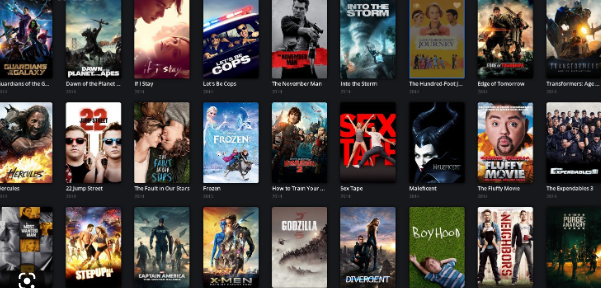

Space X advertises Falcon 9 rocket launches on its website with a cost of 62 million dollars; other providers cost upward of 165 million dollars each, much of the savings is because Space X can reuse the first stage.
Therefore, if we can determine if the first stage will land, we can determine the cost of a launch. This information can be used if an alternate company wants to bid against space X for a rocket launch.
The goal of the project is to create a machine learning pipeline to predict if the Falcon 9 first stage will land successfully and also determine the price of each launch.
.

In this project, I built a classifier to predict whether a loan case will be paid off or not.
I loaded a historical dataset from previous loan applications, cleaned the data, and applied different classification algorithm on the data. I used the following algorithms to build my models:
- k-Nearest Neighbour
- Decision Tree
- Support Vector Machine
- Logistic Regression
The results are reported as the accuracy of each classifier, using the following metrics when these are applicable:
- Jaccard index
- F1-score
- LogLoss

To better understand the growth and impact of Bitcoin and other cryptocurrencies you will, in this project, explore the market capitalization of different cryptocurrencies.
Extracting financial data like historical share price and quarterly revenue reportings from various sources using Python libraries and webscraping on popular stocks. After collecting this data I visualized it in a dashboard to identify patterns or trends. The stocks available are Tesla, Amazon, AMD, and GameStop.
A thorough exploration of a Covid-19 Dataset in SQL Server. The data explored the severity of Covid-19 cases and the vaccination response in Nigeria. Skills used: Joins, CTE's, Windows Functions, Aggregate Functions, Creating Views, Converting Data Types
A detailed analysis using Microsoft SQL Server to show insights of product performance at both category and sub-category levels of a US-based SuperStore. With deepdive analysis of customers, orders and geograpghy performances as regards to sales and profits.
An organization in the Nigerian insurance sector is undergoing operational reorganisation due to the harsh business environment. An in-depth monthly trend analysis of product, branch, and manager performance is necessary to arrive at a Data Driven Conclusion of which things to stop selling, which locations to close, and which new products to start marketing.
An Excel sheet that contains six months transactional data for insurance premium receipted and claims disbursed by the organization was provided and visuals with insights are expected showcasing :
- To see how products are performing month to month in order to help with business discussions about which products to suspend.
- The Director will like to know how well-performing branches/managers are in terms of premiums paid against claims paid.
- The Director also requests to know which branch or manager should be suspended, as well as the reasons why, based on the data.
- To know what kind of new products will be accepted in the market.
- A comparison between the third and first quarters of 2021 and 2022.
Headquartered in LAGOS, Kultra Mega Stores (KMS) specializes in office supplies and
furniture. The company's customers range from individual consumers and small businesses
(retail), to corporate organizations (wholesale) located in the LAGOS, Nigeria.
I was contracted as a Business Intelligence Analyst to help the Abuja division of KMS. The
Business Manager has given you an Excel file containing Order data from 2009-2012 and he
would like you to analyse and present your insights from the analysis.

I analyzed movies produced between 1960 and 2015. I've gathered data from Kaggle, cleaned the data using Python, and imported it into the Microsoft SQL Server for analysis and then Power Bi for visualization.